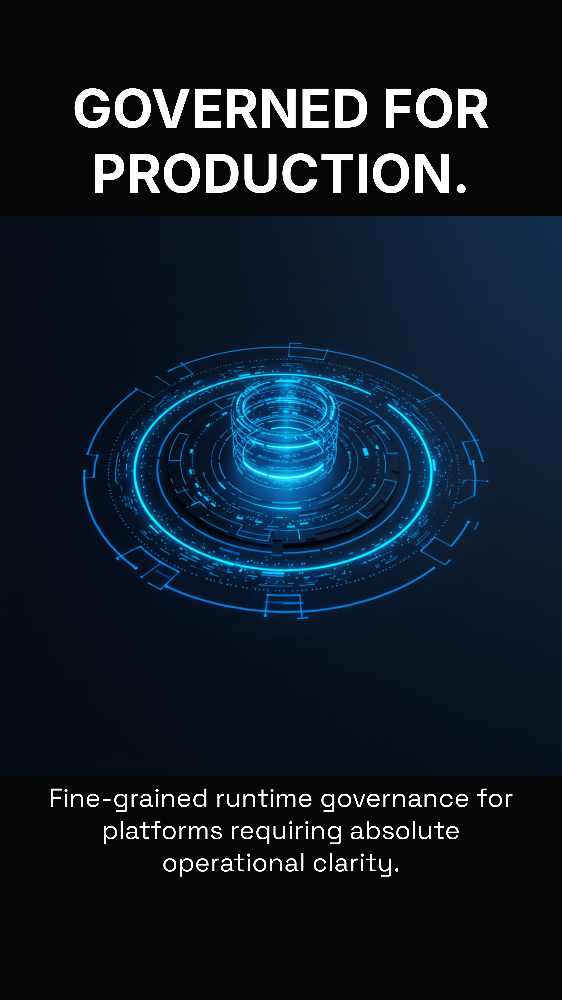
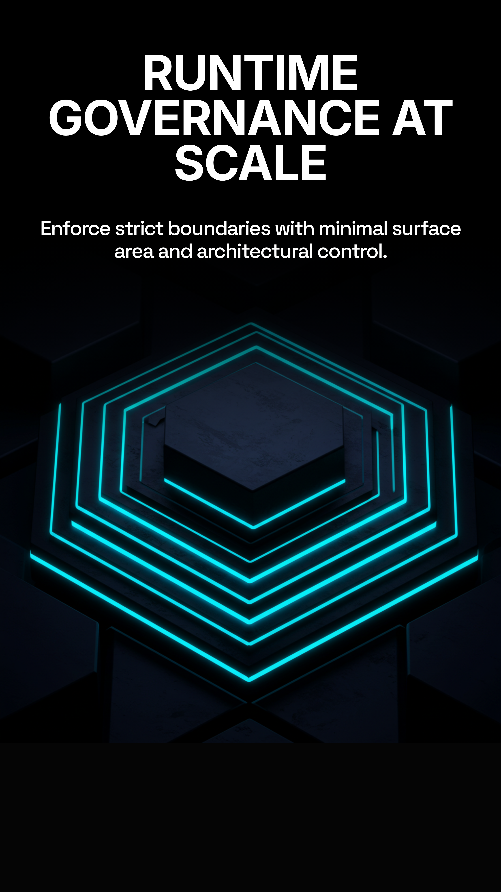
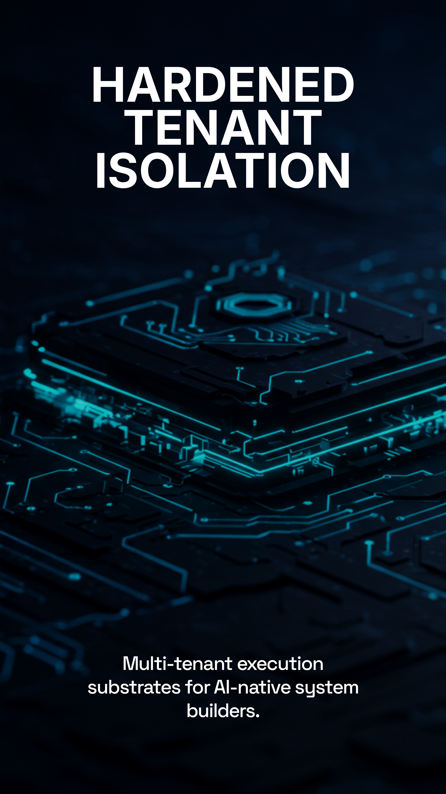

GozoLite is TotyLabs' execution layer for secure, governed software operations.
It is a polyglot execution platform built for teams that need to run code safely, under control, and with traceability. GozoLite combines isolated runtime execution, API-first integration, and enterprise-grade auditing so sensitive workloads can be embedded into products and internal processes without losing operational discipline.

What GozoLite is built to do
Secure execution
Every request runs in a fresh, ephemeral container with strict limits for memory, CPU, and processes, reducing the chance of cross-tenant interference or uncontrolled behavior.
Multi-language support
GozoLite is designed for a broad range of enterprise languages through a declarative runtime registry, making it practical for teams with mixed technical stacks.
Governed access
Authentication, role-based access, tenant isolation, quotas, and rate limits are part of the execution model so teams can expose capabilities without sacrificing control.
Operational visibility
Each run produces logs, metrics, and audit trails that make it easier to review behavior, investigate issues, and meet compliance expectations.
Support Lifecycle & Compatibility
We adhere to Strict Semantic Versioning (SemVer 2.0.0). Enterprise builds are guaranteed backward compatible within major version lines for at least 24 months.
| Lifecycle Stage | Duration | Description |
|---|---|---|
| Active Support | 12 Months | Full feature updates, security patches, and priority bug fixes. |
| Maintenance | +12 Months | Critical security patches and high-severity bug fixes only. |
| Extended Maintenance | Custom | Contract-specific support for legacy runtime versions. |
Escalation Model
- 24/7/365 Incident Response
- Direct Engineering Access (L3)
- Architecture Review Sessions
- Custom Patch Engineering

Isolation Guarantees
Enterprise builds include hardened multi-tenant boundaries verified against current threat models.
